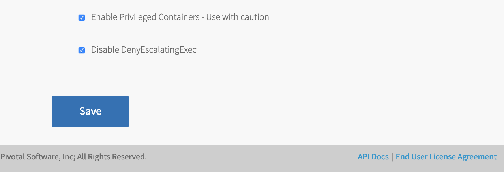

Installing PFS on PKS on vSphere
Page last updated:
This topic describes how to install Pivotal Function Service (PFS) on Pivotal Container Service (PKS) installed on VMware vSphere.
Requirements
- The
pksCLI has been installed. - The
kubectlCLI has been installed at version 1.10 or later. - The
pfsCLI has been downloaded and installed. - PFS container images have been downloaded and successfully relocated to a container registry as publicly accessible images.
- The relocated manifest and relocated image-manifest files are available.
Container Registry Configuration
PFS installations require a container registry. If your organization already has a Docker registry then you can use that as long as it meets the following criteria:
- The server has a DNS entry that can be resolved from all systems in your network environment.
- The server is configured with a TLS certificate signed by a trusted Certificate Authority.
- The registry uses basic security (OAuth will be available as an option in a future PFS release.)
- You can push images that are public so no authentication is required to pull them.
The registry service provided by Docker Hub does meet these criteria but you might prefer to use a registry inside your corporate firewall for security or other reasons.
If you decide to install your own container registry you can follow these steps:
Choose your registry software. There are several options available including VMware Harbor, JFrog Artifactory and Sonatype Nexus Repository. Install the softare according to your needs.
Create a DNS entry for your registry’s host name.
Install a matching TLS certificate signed by a trusted Certificate Authority like Let’s Encrypt.
Configure the registry server for basic authentication.
Create necessary user accounts and registry projects. The images used for PFS installation must be available as public images.
Installation Steps
If you haven’t already done so, push the relocated images to the Docker registry using the
pfsCLI as shown below where the-iflag is the path to the previously relocated image manifest file. This step requires your local docker daemon is logged in to the registry where you are pushing the images (usedocker login <registry-server>).pfs image push -i pfs-relocated/image-manifest.yamlSelect a PKS plan and enable privileged containers and escalated privileges.
This step is necessary in order for Istio sidecar injection to function correctly.
Using PCF Ops Manager, click on the
Pivotal Container Servicetile, and select one of the plans from the menu on the left. It is recommended to choose a plan intended for large workloads.e.g.
- a master node VM with 2 CPUs and 8GB of memory
- four worker nodes each with 2 CPUs and 8GB of memory
Scroll to the bottom of the plan page and enable both the Enable Privileged Containers and Disable DenyEscalatingExec checkboxes as shown below.

Save your changes and navigate back to the installation dashboard. Click Review Pending Changes and then apply them.
Log into the PKS environment using your usual credentials. To log in targeting the PKS API server
pks-api.example.comas useradminwith passwordadminpasswordthe following command would be run.pks login -a pks-api.example.com -u admin -p adminpasswordCreate a new PKS cluster being careful to specify the PKS plan which you configured in step 3 above.
To create a new cluster called
myclusterusing thelargeplan, and an external hostname ofmyhostname.example.comrun:pks create-cluster mycluster \ --external-hostname myhostname.example.com \ --plan largeTrack the progress of the create using the
pks clustercommand. For example, to check on the status of a cluster namedmyclusterrunpks cluster myclusterIt can take up to 30 minutes for cluster creation to complete.
Configure load balancer and DNS for the created cluster.
See the PKS documentation - Configure Cluster Access
It can take several minutes for the DNS record information to propagate around the network. During this time “unable to connect” or “no such host” errors may occur when attempting to use kubectl with the cluster.
Use the
pksCLI to retrieve credentials and change your kubectl context to your PKS cluster.To change context to a PKS cluster named
myclusterrun the following:pks get-credentials myclusterVerify that the current context is as expected using
kubectl:kubectl config current-contextmycluster
Install PFS using the
pfsCLI as shown below where the-mflag is the path to the previously relocated manifest file.pfs system install -m pfs-relocated/manifest.yamlAfter the command completes pods should be successfully running in the
istio-system,knative-build,knative-eventing,knative-serving, andkube-systemnamespaces similar to the output fromkubectl get podsshown below.kubectl get pods --all-namespacesNAMESPACE NAME READY STATUS RESTARTS AGE istio-system istio-citadel-6dddb76bff-fhhd9 1/1 Running 0 1m istio-system istio-egressgateway-6ffcb89f5-s5twg 1/1 Running 0 1m istio-system istio-galley-76db9d5457-6whqt 1/1 Running 0 1m istio-system istio-ingressgateway-b44b59658-ndpkz 1/1 Running 0 1m istio-system istio-pilot-78668c67bd-swmj9 2/2 Running 0 1m istio-system istio-policy-78fd576646-l8rpd 2/2 Running 0 1m istio-system istio-sidecar-injector-646b6f4d4b-wt9g2 1/1 Running 0 1m istio-system istio-telemetry-56fbcd7b6f-s6bpg 2/2 Running 0 1m istio-system knative-ingressgateway-6d8d7b56f6-mg9qt 1/1 Running 0 36s knative-build build-controller-bcfdddf77-nb5f6 1/1 Running 0 37s knative-build build-webhook-7dccdd6ff8-qnb4p 1/1 Running 0 37s knative-eventing eventing-controller-5bb797f774-nhhj4 1/1 Running 0 31s knative-eventing stub-clusterbus-dispatcher-5658748c67-lhddz 2/2 Running 0 15s knative-eventing webhook-685f94854c-l9z7x 1/1 Running 0 31s knative-serving activator-779cf7cd8-2m984 2/2 Running 0 34s knative-serving activator-779cf7cd8-nj76w 2/2 Running 0 34s knative-serving activator-779cf7cd8-r6sgm 2/2 Running 0 34s knative-serving autoscaler-85984647cf-9d5wl 2/2 Running 0 34s knative-serving controller-6ff4f74bd9-cc7hz 1/1 Running 0 33s knative-serving webhook-5d898886bf-xlps4 1/1 Running 0 33s kube-system heapster-6d5f964dbd-fgrlk 1/1 Running 0 1h kube-system kube-dns-6b697fcdbd-76p4d 3/3 Running 0 1h kube-system kubernetes-dashboard-785584f46b-bd68t 1/1 Running 0 1h kube-system metrics-server-5f68584c5b-n9wh4 1/1 Running 0 1h kube-system monitoring-influxdb-54759946d4-wv29g 1/1 Running 0 1h kube-system telemetry-agent-68c6647967-886bd 1/1 Running 0 1h pks-system fluent-bit-dmrcv 1/1 Running 0 1h pks-system fluent-bit-fcvhk 1/1 Running 0 1h pks-system fluent-bit-lbwns 1/1 Running 0 1h pks-system fluent-bit-s8j7r 1/1 Running 0 1h pks-system sink-controller-7c85744bd6-4lbwq 1/1 Running 0 1h
PFS is now installed. Next you need to prepare one or more namespaces for your functions.
Prepare a Namespace
You need to initialize PFS resources in each Kubernetes namespace that your function pods will run in.
Create a kubernetes secret with the registry push credentials in the namespace you plan to use. The secret should contain the URL for your organization’s Docker registry, your username and password base64 encrypted. Create a file named
registry-push.yamlwith the following content:apiVersion: v1 kind: Secret metadata: name: registry-push annotations: build.knative.dev/docker-0: https://registry.example.com/v1/ type: kubernetes.io/basic-auth data: # Use 'echo -n "username" | base64' to generate this string username: dXNlcm5hbWU= # Use 'echo -n "password" | base64' to generate this string password: cGFzc3dvcmQ=Replace the registry server and your username and password in the above file with your values.Then apply the secret configuration using the
kubectlCLI. The following command creates the secret in thedefaultnamespace:kubectl apply -n default -f registry-push.yamlUse the
pfsCLI to initialize PFS resources in a Kubernetes namespace. Pass the path to the previously relocated manifest file using the-mflag and the name of the previously created secret for the push credentials using the-sflag. The following command initializes thedefaultnamespace:pfs namespace init default -m pfs-relocated/manifest.yaml \ -s registry-push
Optional: Enable Outbound Network Access
Knative blocks all outbound traffic by default. For PFS functions to call services outside the cluster, it is necessary to enable outbound network access. Details on how to do that are given in the Knative guide for configuring outbound network access.
See Troubleshooting PFS for details on how to verify the outbound traffic configuration.
You can now create your first function.